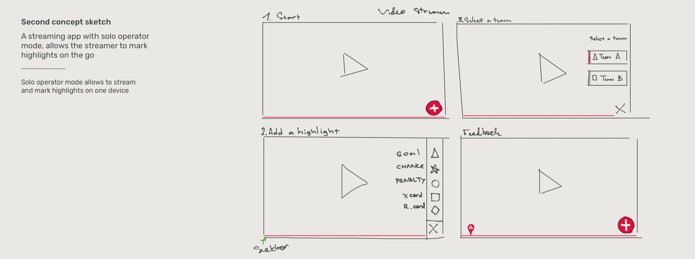
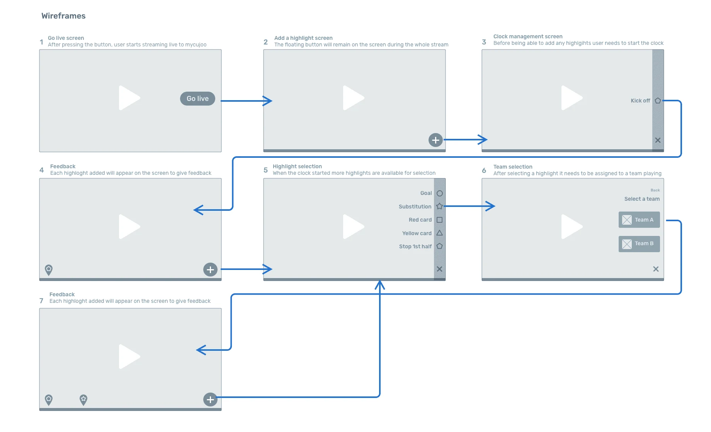
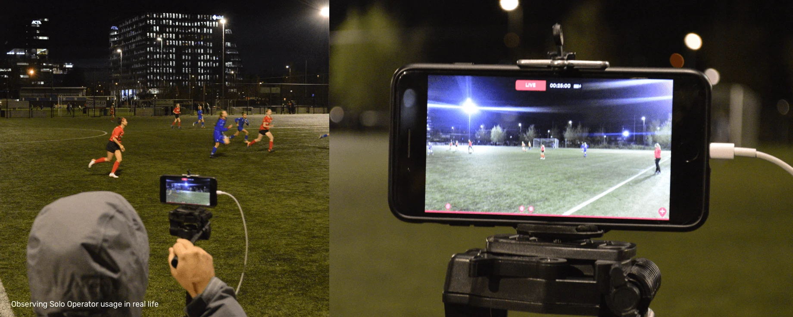

December 2018
Archive
Solo Operator
MyCujoo streams semi-professional and amateur football. Many clubs could spare only one volunteer per match, so streams often went out without highlights. I designed a mode that lets one person stream and mark highlights on the same phone.
- Discipline
- UI/UX design
- Company
- MyCujoo
- Year
- 2018
- Platform
- iOS
01
Problem
To stream on MyCujoo, a club needed a camera or a smartphone, plus a laptop running MyCujoo Studio to mark the highlights.
Interviews showed that many clubs couldn’t regularly spare more than one volunteer. That was one of the main reasons so many streams ended up without highlights.
02
What I did
My first idea was a companion app for marking highlights, but it still needed a second person. The second concept became a mode of the existing streaming app instead.
The screen is small and the operator needs to see the game, so with my PO I cut Studio’s nine highlight types down to five: goal, red card, yellow card, substitution and the clock. The operator picks a highlight, then a team, and a pin on the seek bar confirms it.
Users and the business loved the clickable prototype, so we built a proof of concept on iOS in 1.5 sprints, released it behind a feature flag, and watched people use it at cold stadiums in Alkmaar and Amsterdam.



03
What I learned
A prototype couldn’t show the tripod. Most tripods are made for right-handed people: operators steer the phone with the right hand and tap with the left, covering the screen while they mark a highlight. The next build let them choose which side the controls sit on.